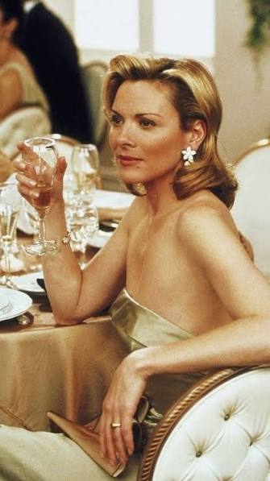

Four women, four personalities, one unforgettable friendship.
CARRIE BRADSHAW
THE WRITER
A fashion icon who explores love, friendship and life in New York City.
Carrie is a writer known for her love of fashion, her relationships and her reflections on life in New York City. Her personal style combines creativity, glamour and unexpected combinations.

SAMANTHA JONES
THE BOLD ONE
Independent, confident and fearless.
She always lives by her own rules.
Samantha is confident, ambitious and independent. She expresses her personality through bold fashion choices and believes in enjoying life without compromising her freedom.
CHARLOTTE YORK
THE ROMANTIC
Elegant and optimistic, she believes in love and happily-ever-afters.
Charlotte is romantic, elegant and traditional. Her style reflects
her love for classic silhouettes, feminine details and timeless pieces.
She values love, friendship and family.
MIRANDA HOBBES
THE REALIST
Smart, ambitious and independent.
She always speaks her mind.
Miranda is intelligent, practical and determined. As a successful lawyer, she prioritizes her career and independence.
Her style is sophisticated, functional and confident.